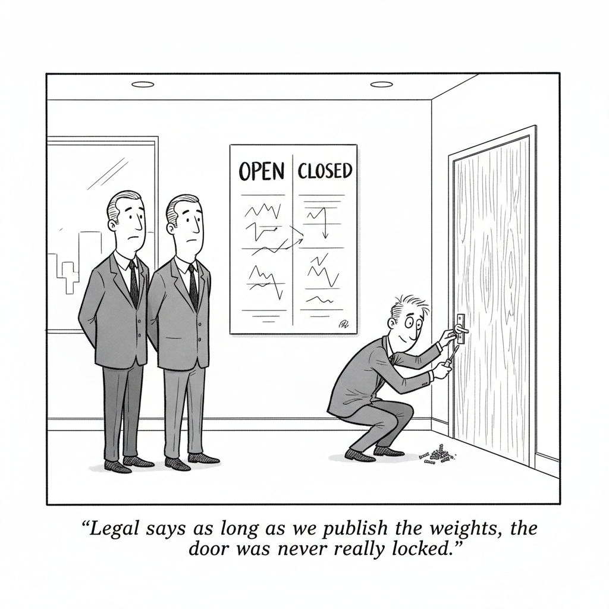

Your daily AI news digest
AI the News That's Fit to Prompt

The number that carries this argument comes from Artificial Analysis, not from a lab's own announcement post. DeepSeek's new V4 Flash lands one Intelligence Index point behind GPT-5.6 Luna, and even after OpenAI cut prices by 80 percent, V4 Flash still costs 60 percent less per task. It is also small enough to run on cheaper hardware. The commentary's question follows directly from that: from a business perspective, why pay more for the same tier of quality?
The piece argues that U.S. export controls produced this outcome rather than preventing it. Barred from top-tier GPUs, Chinese labs optimized at the architectural level instead of brute-forcing scale, and released weights to draw on the global research community while pushing much of the inference cost onto Western cloud providers. The result was not a grand strategy but an adaptation, and it has landed open models within a few months of the closed frontier on capability.
It also takes apart two of the standard objections. Open-source models do make money, through managed inference and hosted API service, the same way open-source software always has, because most users have no interest in running their own GPUs. And data-residency worries dissolve when the model is self-hosted or routed through a U.S. inference provider. What remains, the author argues, is an anti-competitive interest: open weights threaten the ability to charge a large premium for higher intelligence, and a ban on them would cost U.S. companies more than it costs China.

"Legal says as long as we publish the weights, the door was never really locked."
Trump White House Readies AI Framework to Review Security Risks
The Times reports that the administration is preparing a framework for reviewing the security risks of AI systems. The story is paywalled, so this is a headline and a pointer rather than a summary, but the timing is worth marking. Yesterday this newsletter carried the Times on Washington whipsawing the industry over AI rules fast enough that nobody could plan against it. A formal review framework is the opposite motion: an attempt to convert improvisation into procedure. Read it against the lead story above, which argues that the models most of the world will actually run are downloadable, released outside U.S. jurisdiction, and have no release event for a framework to attach to. A security-review regime is only as broad as the set of systems that pass through it.

Europe's AI Sovereignty Is Under Threat. Could Mistral Be the Answer?
In May, Arthur Mensch told a largely empty French National Assembly hearing room that Europe had roughly two years to build its own AI infrastructure or become a "vassal state." One month later Washington proved the point for him: the Commerce Department temporarily cut off foreign access to Anthropic's Mythos, the model European firms and governments had been scrambling for because it can find software vulnerabilities and exploit them autonomously end to end. "It's been a validation of what we've been warning our customers about," Mensch says. The uncomfortable part is the scale. Mistral has raised roughly $4 billion and is worth about $23 billion. Anthropic was recently valued at $965 billion, more than 40 times that; OpenAI at $852 billion. Mistral still leans on U.S. chips and cloud, just expanded a partnership with Microsoft, and on some benchmarks its flagship Large 3 performs near where OpenAI was a year and a half ago. Around 40 percent of its revenue comes from outside Europe, and Mensch is careful not to be cast as merely a regional champion.

Trump's Tariffs Were Supposed to Reshore Manufacturing. Some Companies Are Going Back to China.
Now that Section 301 levies put China and Vietnam at a similar 12.5 percent, the advantage of having moved out of China has largely evaporated. A Texas flashlight company that pushed its manufacturer to build in Thailand is reconsidering. "Have we pulled back to China? Yes, we have," its COO told the Times. PIIE's Mary Lovely supplies the harder number: China's share of U.S. imports fell from nearly 18 percent in 2018 to about 11 percent today, but China's share of total value added in U.S. imports has stayed at roughly 15 percent over the same period, because inputs simply route through third countries. EY-Parthenon puts the cost of genuinely decoupling at $13.7 trillion over 25 years. "The story that it is bringing back manufacturing is really not the story," Lovely said. "Manufacturing is not coming back."
Cryptogram
Each letter stands for another. Type a guess and it fills in everywhere that code letter appears. Three letters are filled to start.
Nvidia Partner Hon Hai's Sales Rise 54% on Strong AI Demand
Hon Hai, the Nvidia manufacturing partner better known as Foxconn, reports sales up 54 percent on AI demand. It is the loudest entry in a day that reads like a supply-chain ledger: Taiyo Yuden raising its forecast and capex on AI demand, Infineon beating on AI power chips, Sandisk recovering, Australia expanding renewable-powered data centers. Bloomberg is paywalled, so these are headlines and pointers. Taken together they describe the part of the industry that gets paid the same whether the winning model is open or closed.
US Ban on Chinese Optical Parts Hurts Hyperscalers, Report Says
A proposed U.S. import ban on Chinese optical components would land on the hyperscalers building the data centers, according to a report Bloomberg cites, and Chinese optical stocks slid on the news. Optical interconnect is the unglamorous plumbing that lets a cluster behave like one machine, which makes it an awkward thing to restrict while simultaneously racing to build more clusters. It is the same tension the lead story identifies from the other direction: export controls aimed at slowing a rival that also tax the side imposing them.
AI Bot Hacks Show Need for 'Holistic' Safety Guardrails
A Bloomberg video segment with Rhodium's Goujon arguing that recent bot hacks call for a holistic approach to AI safety guardrails rather than piecemeal fixes. It is the practitioner-side companion to the White House framework story above, and to the Mistral piece's reminder that the model European governments were queueing for was wanted precisely because it could run offensive security work end to end.
SpaceX's AI Splurge Puts a Damper on Debut Earnings
A Bloomberg video segment on SpaceX's first earnings as a public company, where its own AI spending is the line item weighing on the result. Pair it with Infineon beating its forecast and falling anyway: two different companies, the same signal. Capex enthusiasm has started meeting quarterly reporting, and investors are pricing the cycle rather than the quarter.
US Ban on Chinese AI Components Unlikely to Dent Export Engine
China's official newspaper warns Washington over expanding tech curbs, and Bloomberg's read is that the export engine survives them. The rhetorical half of the optical-components story above.
Chinese Optical Stocks Slide on Report of Proposed US Import Ban
The market's immediate verdict on the proposed ban, delivered in share prices before any rule exists.
Infineon Falls as AI Boom Concerns Trump Strong Sales Forecast
Infineon beats on AI power-chip demand and the stock falls anyway. When a good forecast is not enough, the market is pricing the boom rather than the quarter.
Taiyo Yuden Raises Earnings Forecast, Capex Plans on AI Demand
The Japanese component maker raises both its earnings forecast and its capital spending plans on AI demand. Capex commitments are the version of confidence that is expensive to reverse.
Sandisk Earnings Give Dip Buyers an Opening After Stock's Plunge
Bloomberg on Sandisk's earnings as a buying opportunity following the stock's plunge. Storage is the quieter half of the memory story that CXMT occupied yesterday.
Australia Doubles Down on Data Centers Using Renewable Power
Australia is betting on renewable-powered data centers, one answer to the energy bill underneath every compute buildout in this issue.
Moonshot Backer Monolith Seeks to Raise $500 Million in New Fund
Monolith, a backer of Moonshot AI, is raising a new $500 million fund. Moonshot's Kimi models are named in today's lead as part of the open-weight wave.
Temasek, Morgan Stanley Are Said to Eye Adtek Pre-IPO Investment
Temasek and Morgan Stanley are reportedly weighing a pre-IPO stake in Adtek. Another entry in the run of Asian listings and late-stage rounds attached to the hardware layer.
EQT-Run Scaleup Europe Fund Invests in Satellite Startup Iceye
The EQT-run Scaleup Europe fund backs Finnish satellite startup Iceye. European capital funding European infrastructure is the same argument Mensch is making about models.
Moove Hits $2.1 Billion Valuation in Mubadala-Led Fundraising
The African mobility fintech Moove reaches a $2.1 billion valuation in a round led by Mubadala. Gulf sovereign capital continues to show up wherever growth financing is scarce.
Gen Z's Anti-Capitalist Brand Says One Thing. Its Spending Data Says Another.
Fortune finds Gen Z spending across income bands regardless of the K-shaped-economy framing, and regardless of the generation's stated politics. Stated preference and revealed preference, again.
Billionaires Are Flooding the Midterms, but a Reliable GOP Megadonor Went Silent
Ronald Lauder spent tens of millions backing Republicans over two decades and has given almost nothing this cycle. Worth noting in a year when tech money is unusually organized around AI policy.